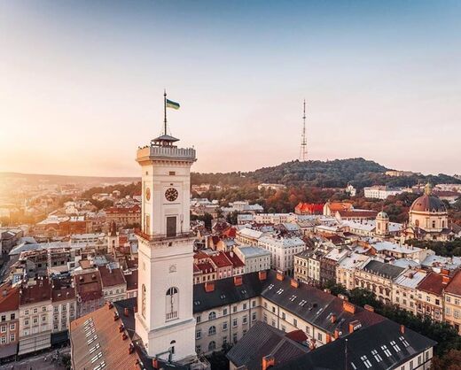
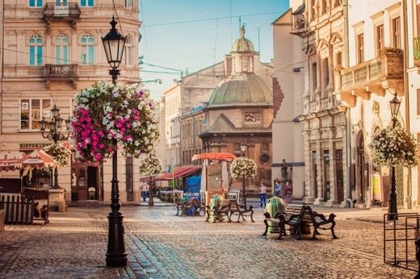
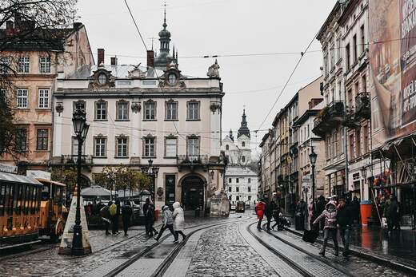

Львів — найбільше місто Західної України, що протягом багатовікової історії було, і є нині, науковим, культурним та
національним центром регіону.
В найдавніші часи — столиця Галицько-Волинської держави, згодом — адміністративний центр Руського воєводства,
автономного Королівства Галичини
та Володимирії. 1918 року — столиця ЗУНР. Після захоплення Галичини Польщею Львів став
центром однойменного воєводства.
З початком Другої світової війни був окупований Червоною армією, а 1941 року —
вермахтом. 1939 року включений до Радянського Союзу.
Від 1991 року — адміністративний центр Львівської області
Незалежної України.
Історія міста Лева

Історики встановили, що на місці сучасного Львова, зокрема на Знесінні і в центрі міста навколо ринку Добробут ще у V
столітті існували поселення.
Навколишні землі, імовірно, належали до племінного утворення білих, або великих хорватів. В
907 році вони взяли участь у поході
київського князя Олега на Константинополь, що свідить про перебування цих теренів,
вже у той час, в політичній орбіті Русі. Також, за них, ймовірно, змагалися
представники пеликоморавських і польських
династій, поки у 981 році, за свідченням Нестора
Літописця їх було остаточно приєднано до Русі Володимиром
Святославичем, який збудував свій форпост — град Володимир.
Сучасні памятки культури Львова

Центральна вулиця Львова - місце, повз яке пройти просто неможливо. Тут розташована
одна з головних визначних пам`яток
України – Львівський оперний театр - величний шедевр архітектури в стилі віденського
псевдоренесансу, який сьогодні
зображений на українських купюрах номіналом 20 грн. У туристів мода – фотографуватися
на фоні театру та фонтану перед
ним з двадцяткою у руках, вибираючи такий ракурс, щоб було видно обидві будівлі: і на
купюрі, і в оригіналі. З
південного боку 350-метровий проспект Свободи обмежений площею Міцкевича – тут же
розташований оригінальний пам`ятник
цьому поетові. Поруч знаходиться фонтан зі скульптурою Божої Матері. Тут багато
красивих старовинних будівель-кам`яниць
у різних архітектурних стилях, з багатою обробкою. При цьому проспект виглядає
гармонійно. Ще одна цікавинка проспекту -
так звана "стометрівка" – пішохідна зона поряд з пам`ятником Шевченку.
Пенсіонери тут грають у карти, модниці
демонструють свої наряди, також це місце організації різдвяних і великодніх
ярмарків.
Що обовязково відвідати, якщо ви раптом опинитесь у Львові

Костел святої Ельжбети або Церква святих Ольги і Єлизавети:
розташована ця церква недалеко від залізничного вокзалу на роздоріжжі трамвайних
колій, а верхівка її підноситься над
будинками. Будівля виконана в темно-коричневому кольорі з кремовими окантовками вікон-вітражів і
вхідних дверей. Купола
зеленого кольору. Архітектура церкви явно вибивається із загального ансамблю
будівель і здається, що вся будівля
тягнеться в небо. У сонячний день костел зовні досить світлий і в поєднанні з
зеленими насадженнями виглядаємо дуже
привабливо і гостинно.
Площа Ринок: архітектура центральної частини міста в основному приписується до
епохи Відродження з елементами готики. Будинки на
площі Ринок створювали відомі архітектори з усього світу. До цього всі будівлі на
площі носили ім’я своїх власників і не
мали нумерації. Тільки багаті купці і аристократи могли побудувати тут будинок. Були
також обмеження на поверхи. Тільки
дворянам і вищому духовенству було дозволено побудувати більш ніж триповерхові
будинки. Кожен будинок мав не тільки
унікальну архітектуру, а й свій колорит. Серце Львова, площа Ринок, невелика – всього
142 на 129 метрів. Тут 44 будівлі,
в центрі яких знаходиться мерія. Однак ця дуже маленька територія відкриває для
нас душу чудового міста. У 1998 році
центральна частина міста була внесена до списку Всесвітньої спадщини ЮНЕСКО.
Памятник Степанові Бандері:
бронзова семиметрова постать Бандери стоїть на весь зріст. За монументом височить
тріумфальна арка, яка встановлена на
чотирьох колонах, кожна з них – символ певного періоду історії України. Перша
колона – князівство, друга означає
козацтво, третя – час УНР, четверта символізує наш час.
Проект пам’ятника пройшов 7 жорстких конкурсів, в результаті
перемога дісталася проекту Миколи Посікіри і Михайла
Федько, талановитим скульптору і архітектору. Відкрився монумент в 2007 році і був
присвячений ювілею армії повстанців
України. Біля підніжжя пам’ятника вкладені капсули, наповнені грунтом: одна з
місця народження, інша з місця поховання
Степана Бандери.